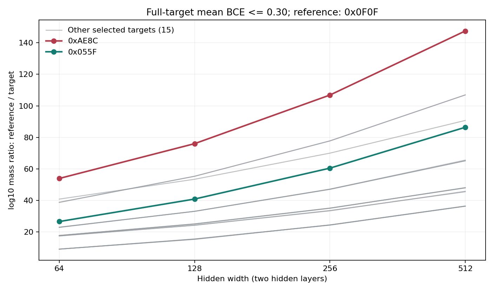

状态：已完成的 4-bit constrained SMC 扫描。2026-10-21 完成核验与发布整理；5 个配置、95 个目标运行、855 条阈值记录。证据层级为指定参考测度和有限采样协议下的静态相对质量证据。
1. 研究问题
固定 16 点完整真值表和目标标签，增大网络宽度后，不同目标的低 BCE 事件获得的相对概率质量是否改变？E38 比较四个双隐藏层网络的宽度轴，并补充 W256 的单隐藏层与双隐藏层对照。它测量完整目标的连续 loss 事件，不测量实际训练轨迹或测试误差曲线。
各网络的参数空间维数不同，但都向共同的 16 维联合 logit 空间诱导概率分布。相同目标和 BCE 阈值定义相同的输出事件，因此可以比较各协议分配给该事件的概率；这不是直接比较未归一化的跨维度欧式体积，也不是测度无关的内禀 K。
2. 核心结果
在共同阈值 BCE = 0.30，以单 bit 规则 0x0F0F 为参照，并排除另一单 bit 规则 0xCCCC 后，其余 17 个选定平衡目标的相对质量劣势在 W64、W128、W256、W512 四点全部严格扩大。17 个差值的中位数依次为 17.7023、25.0701、35.0872、48.0666，单位为十进制 log 质量比。
示例 0xAE8C 的 log10[V(0x0F0F)/V(0xAE8C)] 依次为 53.8901、75.9899、106.8514、147.5235。W256 的对应深度对照为 D1 的 92.4818 与 D2 的 106.8514。简单参照的绝对质量也随宽度下降，主结果是相对差距扩大，而不是简单目标的绝对质量不变。
这些结果不把 BCE = 0.30 称为 hard-exact，不证明 SMC 全局混合，不把共享适应的粒子池当作独立整轮重复，也不直接验证所有双下降或静态质量等于 SGD 选择概率。完整边界见结果与结论。
3. 已完成范围
D 表示隐藏层数。隐藏层为 tanh，输出层为线性 logit；每个目标在全部 16 个输入上计算平均 BCE。
| 配置 | 参数量 | 池数 x 每池粒子数 | 完成目标 | 阈值数 |
|---|---|---|---|---|
| W64 D2 | 4,545 | 8 x 4,096 | 19/19 | 9 |
| W128 D2 | 17,281 | 8 x 4,096 | 19/19 | 9 |
| W256 D2 | 67,329 | 4 x 2,048 | 19/19 | 9 |
| W512 D2 | 265,729 | 4 x 1,024 | 19/19 | 9 |
| W256 D1 | 1,537 | 8 x 4,096 | 19/19 | 9 |
共同阈值为 0.68、0.65、0.60、0.55、0.50、0.45、0.40、0.35、0.30。共计 5 x 19 = 95 个目标运行，95 x 9 = 855 条阈值记录。W256 D2 只计一次；D3、D4 不在本次最终扫描范围内，smoke 和复现检查目录也不计入正式记录。
4. 本目录文件
- 动机与事后协议整理：2026-10-21 的回溯性协议说明，不是新的预注册。
- 结果与结论：全部 17 个相对差值、深度对照、完整性检查与采样边界。
- SMC 数值实现：参数化、目标、受限采样与诊断。
- 五配置扫描驱动：逐配置运行与 preflight。
- 离线分析：读取重跑生成的结果并汇总，不启动训练或采样。
5. 复现入口
以下是重新采样的入口说明，不表示本次文档整理已执行这些命令。使用已配置 CUDA 的 Python 环境，并安装 PyTorch、NumPy、Matplotlib；先核对可用设备和显存，不要占用正在使用的 GPU。在本目录运行：
python -E -s experiment_4bit_smc_width_depth_driver.py
驱动完成后在本目录生成 results_4bit_smc_width_depth/，其五个配置子目录包含配置、目标定义和目标 summary。然后在本目录运行离线分析：
python -E -s analyze_results.py
重跑时应核对五配置范围、19 个目标、9 个阈值及上表粒子预算，并检查 preflight 和最终完成状态。驱动按显存估算选择预算；实际写入的配置必须留存，不能把不同预算产生的新结果无说明地替换为本表读数。历史 W512 D2 汇总记录约 78.69 小时，不能把此入口当作快速演示。
本次发布保留已完成实验的数值采样核心；可移植配置、注释、分析标签与 preflight 失败处理的整理不改变这里声明的科学对象。复现应核对配置与诊断，不承诺不同设备或软件环境下逐位相同。本文的历史结果和重新运行后生成的结果须分别标识。
6. 历史源码与发布副本
历史源码与结果保留原样。归档时的原始文件 SHA256 为：
| 文件 | 历史原始字节的 SHA256 |
|---|---|
| experiment_4bit_smc_width_depth.py | 6a0cd94615ae6ae2d37770fd25ab451587c06bd81f9da18d8a6bff9e174aec8a |
| experiment_4bit_smc_width_depth_driver.py | e23c038c803e3641467074cfaca942a0984aff8d6c7e63bfe1d8998501c32ea9 |
本目录是发布副本，因以下明确列出的改动，不应拿它的整文件哈希冒充历史源码哈希。数值实现只更正采样核名称、参考阈值说明和分析提示；配置、前向计算、幸存筛选、重采样、变异及结果记录等18个核心定义通过去除注释与docstring后的AST一致性核验。
驱动另外修复了一个preflight边界分支：当所有协议都超过显存预算时，原实现错误地回退到第一档；现在回退到最低档并保留警告。这不改变已有某一档满足预算时的选择。三种协议选择分支已用内存估算桩核验，没有启动SMC。新增离线汇总脚本从保存结果重建数值表和网站图片，不改写原结果。
E38：动机与事后协议整理
整理日期：2026-10-21。此文在扫描完成后依据已保存配置与结果撰写，是事后协议整理，不是扫描开始前的预注册。文件名沿用实验目录约定，不能据此声称问题表述、参照选择或统计摘要已经前瞻性注册。
1. 动机与证据对象
增大网络容量既可能改变任务的可表示性，也可能改变不同可实现目标的相对概率质量。E38 只考察后一个静态问题：在固定目标和共同 loss 阈值下，宽度与深度变化是否伴随相对偏好变化。
这为容量轴上的简单性选择提供一个可测对象，但没有同时测量有限训练集上的候选竞争、优化器实际选择或泛化曲线。把静态质量与这些动态现象联系起来仍需要额外证据，不能由本次扫描的完成状态代替。
2. 固定输入与目标
输入是按整数 0 至 15 排列的全部 4-bit 字符串，每个输入按最高位到最低位编码为四个 0/1 坐标，不使用 -1/+1 输入编码。目标 ID 的第 i 个低位给出第 i 个输入的标签，即 y_i = (function_id >> i) & 1；模型的 hard 标签按 logit >= 0 判为 1。
五个配置使用完全相同的 19 个目标，每个目标都是 8 个 0、8 个 1 的平衡规则。下列 ID 在脚本中均带 fn_ 前缀：
0x0F0F 0x88EE 0x3B23 0x1337 0x7F02 0xAE8C 0xCCCC
0xF550 0xBB22 0x4D4D 0x055F 0xAB2A 0x2AAB 0xD554
0x2F0B 0xF2B0 0x1F07 0xFD40 0xEAA8
这是选定目标集合，不是全部 4-bit 函数的枚举。0x0F0F 与 0xCCCC 是两个单 bit 规则；汇总中的 17 个目标是排除这两项后的集合。“复杂端示例”用于描述本协议中的 0xAE8C，不把目标 ID 或 ANF 指标当作测度无关的复杂度真值。
3. 网络与参考测度
网络为 4 -> W -> 1 或 4 -> W -> W -> 1，隐藏层为 tanh，输出层为线性 logit，所有层均含 bias。设参数量为 p，归一化参数坐标独立服从 uniform[-1,1]：
前向计算中，首层 weight 与 bias 都乘以 1/sqrt(4)，后续隐藏层及输出层的 weight 与 bias 都乘以 1/sqrt(W)。因此，宽度变化还伴随这一固定缩放规则所规定的参考分布变化，不能解释成只增添神经元、其它分布性质完全不变。参考测度是归一化参数盒的均匀测度，不是 Gaussian 测度。
已完成运行使用 NVIDIA GeForce RTX 3080 10GB，记录设备为 cuda:1。粒子与前向计算使用 float32，对数质量累计使用 float64，TF32 关闭。后续复现须记录实际软件与设备环境，不通过更换精度来冒充同一数值协议。
4. 共同输出事件与比较量
令 U 为全部 16 个输入，z = Z_{W,D}(theta) 为其联合 logit 向量，标签为 y_i = f(x_i)。用自然对数定义平均 BCE：
不同参数空间都映射到这个共同的 16 维输出空间。其推前概率分布和完整目标事件质量定义为：
这使跨维度比较成为“不同生成协议向同一输出事件分配多少概率”的问题。相对比值消除整体归一化因子，但不消除参考测度在不同区域间重新分配质量的影响。因此不能把结果升级为测度无关的 K，也不能把完整目标事件质量当作同一有限训练集中的全部候选竞争赔率。
结果使用每个目标的池间 log10 V 中位数，而不是先平均体积再取对数。令 s = 0x0F0F，定义报告量：
Delta > 0 表示参照事件的估计质量更大；本文将它简称为十进制 log 质量比。它不是以 bit 计的 Neural K 差；若转换成 bit，须乘以 log2(10)。17 个目标差值的中位数又是一次跨目标汇总，不能与每个目标内部的池间中位数混淆。
5. SMC 协议与预算
保存节点固定为 0.68、0.65、0.60、0.55、0.50、0.45、0.40、0.35、0.30。相邻保存节点之间可以有多个自适应 SMC 层；9 个保存节点不等于只运行 9 层。
| 项目 | 实际协议 |
|---|---|
| 初始粒子 | 在归一化参数盒内独立均匀采样 |
| 中间门槛 | 各池 loss 的 0.5 分位数取最大值，再受下一保存节点及当前门槛约束 |
| 重采样 | 在各池内部从幸存粒子中有放回重采样，累计各层幸存比例的对数 |
| 局部提案 | 分块及全参数的对称随机游走，越过参数盒边界时反射 |
| 刷新提案 | 每次块提案以 0.02 概率替换为该块的均匀刷新 |
| 步长适应 | 每层 8 轮，按全部池汇总接受率调节，目标接受率 0.30 |
| 固定步长更新 | 每层再进行 24 轮 |
| 初始步长 | 首层 0.050，中间层 0.030，输出层 0.050，全参数 0.015 |
| 步长范围 | 0.0002 至 0.30 |
| 最大层数 | 每个目标 2,000 层 |
| loss 数值容差 | 采样接受条件使用 1e-7；完成核验另以 1e-6 检查保存最大 loss |
随机游走使用正态扰动，但参考测度仍是盒内均匀分布；该更新核不是 pCN。对固定门槛与固定步长，反射随机游走和均匀刷新以保持受限均匀测度为目标；实际运行中的自适应和有限更新并不提供全局混合保证。
W64 D2 与 W128 D2 使用 8 x 4096，W256 D2 使用 4 x 2048，W512 D2 使用 4 x 1024，W256 D1 使用 8 x 4096。这些是粒子池数与每池粒子数，不是独立整轮重复次数。池间共享下一门槛与步长适应，即使重采样在各池内进行，也不能按独立重复构造置信区间。
原协议的 prior、resampling、mutation、calibration 基础随机种子分别为 2026082410、2026082420、2026082430、2026082440；前三类生成器的种子再加上 1_000_003 * target_index，各池从相应生成器的序列中取样，不是各池独立启动整轮实验。额外的直接 prior 校准使用 4,194,304 个样本，检查 0.68、0.65、0.60 三个阈值；它不能替代更低 loss 的混合诊断。
6. 事后分析与解释规则
本次在所有配置共同完成的 BCE = 0.30 汇总宽度轴：以 0x0F0F 为固定参照，排除 0x0F0F 与 0xCCCC 后逐一列出 17 个目标的相对差，并计算其中位数；另列 W256 的 D1/D2 示例对照。这是对已完成记录的描述性整理，不补充未运行条件，也不把该汇总追称为前瞻性显著性检验。
完成检查要求五配置各有 19 个完成目标、每目标有完整 9 节点、log-volume 有限且保存最大 loss 不超过阈值加核验容差。谱系、池间跨度和 hard 目标命中单独报告。记录完整不等于估计无偏，方向一致不等于排除共同混合偏差，池间差异小也不是系统误差上界。
E38：结果与结论
核验与整理日期：2026-10-21。本报告仅覆盖已完成的 4-bit SMC 五配置扫描，不包含其它训练任务，也没有因本次整理启动新实验。所有数值均是有限采样估计或保存记录的诊断读数。
1. 完成状态
五个配置均完成 19/19 个目标和全部 9 个保存阈值，共 95 个目标运行、855 条阈值记录。逐条核验未发现缺少节点、非有限 log-volume 或保存最大 loss 超过阈值加 1e-6 的情况。五个结果包均通过 ZIP CRC 检查，每包包含 19 份完整目标 summary；这些仅证明记录与封装完整，不证明全局混合。
最后完成的配置为 W512 D2，其总 summary 记录约 78.69 小时。其它配置的总 summary 在续跑驱动跳过已完成目标后被重写，elapsed_seconds 只记录当次检查或汇总耗时，不能直接用于比较完整运行成本。
2. 共同阈值下的宽度结果
以下均为 BCE = 0.30、D2 的结果。C(f) = -median_pool(log10 V(f))，相对差 Delta(f) = C(f) - C(0x0F0F)；表中最后一列为排除两个单 bit 规则后 17 个相对差的中位数。它们都是十进制对数量，不是 bit 数，四位小数只用于忠实转录读数，不代表已校准到该位的准确度。差值在未舍入数据上计算，因此可与前两列舍入后的差相差末位。
| 宽度 | C(0x0F0F) | C(0xAE8C) | Delta(0xAE8C) | 17 个目标 Delta 的中位数 |
|---|---|---|---|---|
| 64 | 74.2142 | 128.1042 | 53.8901 | 17.7023 |
| 128 | 91.4117 | 167.4016 | 75.9899 | 25.0701 |
| 256 | 110.2689 | 217.1203 | 106.8514 | 35.0872 |
| 512 | 129.1326 | 276.6561 | 147.5235 | 48.0666 |
0x0F0F 的绝对质量也随宽度下降，0xAE8C 下降得更多。支持的读数是简单参照相对于该目标的质量优势扩大，不是“简单目标的绝对质量不受增宽惩罚”。

每条线跟踪同一目标在四个宽度上的相对质量。纵轴不是测试误差，也没有把共享适应池的跨度画成独立置信区间。
3. 全部 17 个目标的相对差
下表排除参照 0x0F0F 和另一单 bit 规则 0xCCCC，列出其余全部选定目标的 Delta。17/17 条序列均在 W64、W128、W256、W512 四点严格递增。
| 目标 | W64 D2 | W128 D2 | W256 D2 | W512 D2 |
|---|---|---|---|---|
| 0x88EE | 9.0126 | 15.4183 | 24.3574 | 36.2827 |
| 0x3B23 | 17.7023 | 25.0701 | 35.0726 | 48.0146 |
| 0x1337 | 38.6580 | 55.3287 | 77.6897 | 106.9552 |
| 0x7F02 | 40.7925 | 53.3776 | 69.9674 | 90.7186 |
| 0xAE8C | 53.8901 | 75.9899 | 106.8514 | 147.5235 |
| 0xF550 | 9.0389 | 15.2343 | 24.4020 | 36.2785 |
| 0xBB22 | 9.0296 | 15.4827 | 24.2693 | 36.3146 |
| 0x4D4D | 9.0373 | 15.3275 | 24.3866 | 36.4003 |
| 0x055F | 26.5401 | 40.8282 | 60.4422 | 86.3721 |
| 0xAB2A | 17.6706 | 24.9376 | 34.9480 | 48.0666 |
| 0x2AAB | 17.3836 | 24.1786 | 33.3372 | 45.7391 |
| 0xD554 | 17.3998 | 24.1873 | 33.5584 | 45.4463 |
| 0x2F0B | 17.6981 | 25.0202 | 35.0872 | 47.8712 |
| 0xF2B0 | 22.8222 | 33.0275 | 47.0894 | 65.5589 |
| 0x1F07 | 22.9634 | 33.0437 | 47.1258 | 65.1122 |
| 0xFD40 | 22.8965 | 33.0338 | 46.9543 | 65.0804 |
| 0xEAA8 | 38.8095 | 55.2474 | 77.7981 | 106.8981 |
这个一致性结论针对同一参照下的 17 个指定目标，不表示所有目标对之间的差距都单调扩大，也不表示局部排序没有反转。该集合不能代表全部平衡函数，更不能代表所有任务或全部 loss 窗口。
4. W256 深度对照
对同一个 0x0F0F/0xAE8C 示例，在 BCE = 0.30 得到：
| 隐藏层数 | C(0x0F0F) | C(0xAE8C) | Delta(0xAE8C) | 池数 x 每池粒子数 |
|---|---|---|---|---|
| D1 | 54.9400 | 147.4218 | 92.4818 | 8 x 4,096 |
| D2 | 110.2689 | 217.1203 | 106.8514 | 4 x 2,048 |
这是一个宽度上的两个深度点，且粒子预算不同，不能据此宣称完整深度单调律。D3、D4 没有对应的完成结果，不作为缺失值推断或外推。
5. BCE 0.30 不是 hard-exact
任一误分类或零 margin 点的单点 BCE 至少为 ln(2)，其它点的 BCE 非负。因此 16 点平均 BCE 的充分 hard-exact 条件是严格低于下列边界：
本轮共同终点 0.30 高于该边界，不能从平均 loss 推出全部 hard 标签正确。D2 的 0xAE8C 终点粒子中，W64、W128 的完整 hard 目标命中比例分别为 0.0002136230、0.0000610352；W256、W512 均未观察到命中。这些是条件粒子样本中的经验比例，不是独立测得的无条件 hard 函数概率；零命中也不证明其真实质量为零。
因此，前述表格和图片描述的是目标标签的连续 loss 事件质量，不是 0xAE8C hard cell 的质量比。即使历史字段名含有 HARD_EXACT_REFERENCE_THRESHOLD，0.30 也只能作为本轮共同参考阈值解释，字段名不能提供数学保证。
6. 采样诊断与不确定性
下表的最少谱系为该配置在 BCE = 0.30 时跨目标、跨池的最小存活初始谱系数；最大池间跨度则先对每个目标计算池间 log10 V 最大值减最小值，再跨目标取最大值。
| 配置 | 最少初始谱系 | 最大池间 log10 质量跨度 |
|---|---|---|
| W64 D2 | 5 | 0.6234 |
| W128 D2 | 5 | 0.6042 |
| W256 D2 | 1 | 0.9419 |
| W512 D2 | 1 | 0.7942 |
| W256 D1 | 4 | 0.5450 |
W256 D2 与 W512 D2 都存在仅余 1 条初始谱系的目标池。这一退化、随宽度递减的粒子预算、池间共享门槛与步长适应，以及有限更新可能遗漏的区域，都限制了精度解释。没有独立预算配平实验，不能把预算效应与宽度效应完全分离；17/17 的方向一致也不能消除共同混合偏差。
约 0.55 至 0.94 的最大池间跨度只是诊断读数，不是独立重复置信区间，也不是系统误差上界。这里不据此给出显著性或已校准的误差条；同样，接受率正常和文件完整都不能单独保证全局混合。
本轮在 0.30 及以下只有一个保存节点，因此不拟合深尾收缩斜率。历史 deep_tail_slopes.csv 为空源于可用节点不足；parity_order_by_threshold.csv 为空源于目标使用 fn_0x 命名而非 parity1 至 parity4。这两项不表示漏跑目标，也不能补造相应分析。
7. 结论与适用边界
本次已完成数据支持：在指定的均匀参数盒、fan-in 缩放、选定 19 个平衡目标和共同 BCE = 0.30 下，排除两个单 bit 规则后，17 个目标相对于 0x0F0F 的估计质量劣势均随四个双隐藏层宽度扩大；W256 的单个示例也呈现 D2 比 D1 更大的相对差。
这是有限协议下的静态相对偏好证据。它不建立测度无关的 K，不把 loss 事件改称 hard cell，不保证对所有规则、架构或阈值成立，也不证明增宽必然改善泛化。E38 没有把完整目标质量与同一有限训练集上的实际优化竞争建立因果对应，因而不能据此直接验证所有双下降，或宣称静态质量就是 SGD 的选择概率。